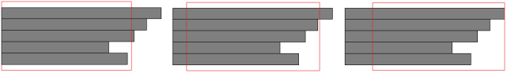

Text is a bit different from images or geometry shapes. Origin and alignment must be taken into account. Text origin is unnecessarily the left top corner of the text block. Android platform sees a different origin setting from traditional JAVA platform. Text horizontal alignments include:
1. left alignment, which means left edge of the text block is aligned with a given rectangle’s left edge;
2. right alignment, which means right edge of the text block is aligned with a given rectangle’s right edge;
3. horizontal center alignment, which means the horizontal center of the text block is aligned with a given rectangle’s horizontal center;
The following image illustrates the above horizontal alignments. Each grey rectangle is a line of text. The red shape is a given rectangle. Please note that the text block is not necessarily wider than the given rectangle. Moreover, at this stage, each line inside this text block is always left aligned.

Figure 9.1: Left, horizontal center and right alignments of a text block.
Text vertical alignments are relatively simple compared to horizontal alignment. They include:
1. top alignment, which means top edge of the text block is aligned with a given rectangle’s top edge;
2. bottom alignment, which means bottom edge of the text block is aligned with a given rectangle’s bottom edge;
3. vertical center alignment, which means the vertical center of the text block is aligned with a given rectangle’s vertical center;
MFP programming language provides two functions to calculate the edges of a text block from its origin, and calculate origin from a given border rectangle (Note that a border rectangle is unnecessarily bigger than the text block). The two functions are:
Function Name | Function Info |
calculate_text_boundary | ::mfp::graph_lib::draw::calculate_text_boundary(4) : calculate_text_boundary(display, string, text_origin, text_style) returns the boundary rectangle of a text block. The format of returned value is a four element array whose elements are [left, top, width, height]. This function's first parameter, display, can be either a screen display or an image display. The second parameter, string, is the multi-line text block. The third parameter is the text block's origin point ([x, y]). An origin point is used by draw_text function as a parameter to draw text. The last parameter, text_style, is a one or two element array. If it is a one element array. The element is a positve integer which is text font size. And the font is system default font. If it is a two element array, the first element is text font size and the second element is string based font name. Note that the last parameter is optional. By default, the system default font with size being 16 is used. Example of this function is: calculate_text_boundary(display, txtStr, [108, 190], [27, "SimSun"]). |
calculate_text_origin | ::mfp::graph_lib::draw::calculate_text_origin(8) : calculate_text_origin(display, string, boundary_rect_left_top, width, height, horAlign, verAlign, text_style) returns the origin point of a text block given text block's boundary rectangle and alignments. The returned value, origin point, is a two element array (i.e. [x, y]) which will be used in draw_text function. Its first parameter, display, can be either a screen display or an image display. The second parameter, string, is the multi-line text block. The third parameter is the boundary rectangle's left and top. This is a two element array whose first element is left and second is top. The fourth and fifth parameters are width and height of the boundary rectangle respectively. The sixth parameter is the text block's horizontal alignment. -1 means left aligned, 0 means center aligned and 1 means right aligned. The seventh parameter is the text block's vertical alignment. -1 means top aligned, 0 means center aligned and 1 means bottom aligned. The last parameter, text style, is a one or two element array. If it is a one element array. The element is a positve integer which is text font size. And the font is system default font. If it is a two element array, the first element is text font size and the second element is string based font name. Note that the last parameter is optional. By default, the system default font with size being 16 is used. Example of this function is: calculate_text_origin(display, "pei is " + peichoices[idx], [256, 72], peiBndrySize[0], peiBndrySize[1], horAlign, verAlign, [22]) . |
Using the above functions, developer may draw a rectangle in any place of display window, and then fill text inside the rectangle, which becomes a button.
The function to draw text is draw_text(owner_info, display, string, origin_place, color, text_style, painting_extra_info). This function adds a painting event in the painting event scheduler. Later on, when this event is called, text string will be drawn in display window. The first parameter of this function is owner_info. Owner_info tells painting event scheduler who owns this painting event. Owner_info can be a string, which means the name of the owner. It can also be an integer, meaning the id of the owner. It can even be NULL, which means system owns the painting event. Owner_info may also be a two element array. The first element of the array is a string (i.e. owner’s name) or an integer (i.e. owner’s id) or NULL (i.e. system). The second element of the array is a floating value working like a time stamp. However, it is not a real time stamp. It can be any value. It will be used when the scheduler starts to clear painting events. The second parameter is display window’s handle. The third parameter is string based text which can be more than one lines. The fourth parameter is text origin. This is a two element array. The first element is x and the second element is y. The fifth parameter is color used in this painting. It is a three or four element array. If four elements, the array is [Alpha, R, G, B]. If three elements, the array is [R, G, B]. In this array, the range of every element is from 0 to 255. The sixth parameter is optional. It defines the font and size of the text. If it is ignored, the font would be system default font and the size of the text is 16. If it is not ignored, it must be an array with one or two elements. If there is only one element, then the element is an integer which means the size of the text. The font of the text, in this case, is system default font. If there are two elements, the first element is the size of the text and the second element is the font’s name. Also, developer may keep in mind that this parameter must match the text_style parameter used in calculate_text_origin call before draw_text and the text_style parameter used in calculate_text_boundary call after draw_text. Otherwise, text position calculation cannot be right. The last parameter is painting_extra_info. It tells scheduler what is the porterduff mode to draw the target image. This parameter is optional. The mechanism of porterduff mode is very complicated. So default value (i.e. ignoring this parameter) is strongly recommended. For further details, developer may refer to related JAVA documents.
Examples of draw_text function includes draw_text("image", display, txtStr, [108, 190], [255, 255, 255], [10 + idx, font]) and draw_text("image", display, txtStr, [108, 190], [255, 255, 255], [idx * 2]).